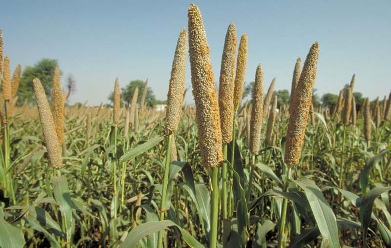
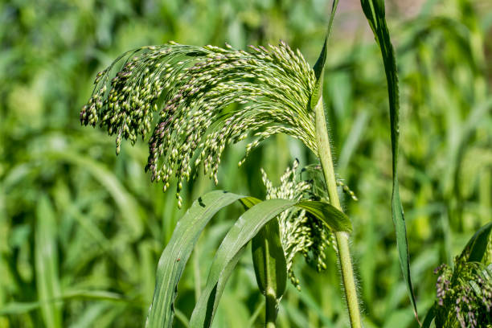

Finger millet

Foxtail Millet

Pearl Millet

Proso Millet

Kodo Millet

Little Millet

Barnyard Millet

Fonio Millet

Finger millet , subfamily- Chloridoideae, tribe -Eragrostideae , kingdom- Plantae , division- Magnoliophyta , class -Lliliopsida , Order - Poales , Family :- Graminae and its binomial name is Eleusine Coracana.

Foxtail millet , order- poales , family - poaceae , subfamily - panicoideae genus - setaria Species: S. italica and its binomial name is Setaria italica .
Pearl millet, order:Cyperales ,family: Poaceae , subfamily: Panicoideae , genus: Pennisetum ,Species: P. glaucum and its binomial name is Pennisetum glaucum.
Proso millet , order - poales , family - poaceae , genus :- Panicum L., species:- P. miliaceum L., and its binomial name is Panicum miliaceum L.
Kodo millet , order- poales , family- poaceae , subfamily: panicoideae , genus: paspalum , species: P. scrobiculatum and its binomial name is Paspalum scrobiculatum L.
Little Millet , order- poales , family - poaceae , subfamily - panicoideae , genus - panicum , species - P. sumatrense and its binomial name is Panicum sumatrense.
Barnyard millet is found in 2 forms ; Japanese Barnyard Millet , Inidan Barnyard Millet . Japanese barnyard millet and indian barnyard millet both belongs to tribe - Paniceae and subfamily - Panicoideae .
Fonio Millet is classified into 2 types ; Black Fonio and White Fonio . Fonio millet , order: poales family: poaceae, subfamily: Ppanicoideae, genus: Digitaria, species: D. exilis, and its binomial name is Digitaria exilis .
Teff millet ,order: poales , family: poaceae , genus: Eragrostis , species: E. tef and its binomial name is Eragrostis tef .
Millets are highly varied groups of small- seeded grasses, small-seeded plant species which can grow extreme weather conditions and they may have numerous health benefits, such as helping lower your blood sugar and cholesterol levels.
Millets are good sources of energy and highly nutritious . They provide protein, fatty acids, minerals, vitamins, dietary fibre and polyphenols. Typical millet protein contains high quantity of essential amino acids especially the sulphur containing amino acids (methionine and cysteine). Processing millet by milling removes the bran and germ layers that are rich in fibre and phytochemicals, causing significant loss.
Millets are classified in 2 types based on size of grains : Major millets and minor millets . Major millets are finger millet , pearl millet , proso millet, foxtail millet and Minor millets are kodo millet , little millet , barnyard millet , fonio millet , teff millet .